HDFS分布式文件系统
1. HDFS读写流程
1.1 数据写流程
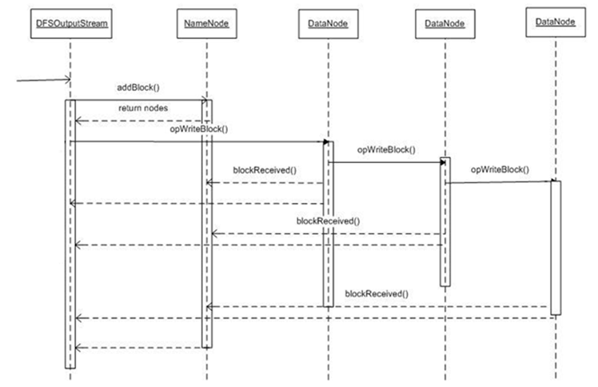
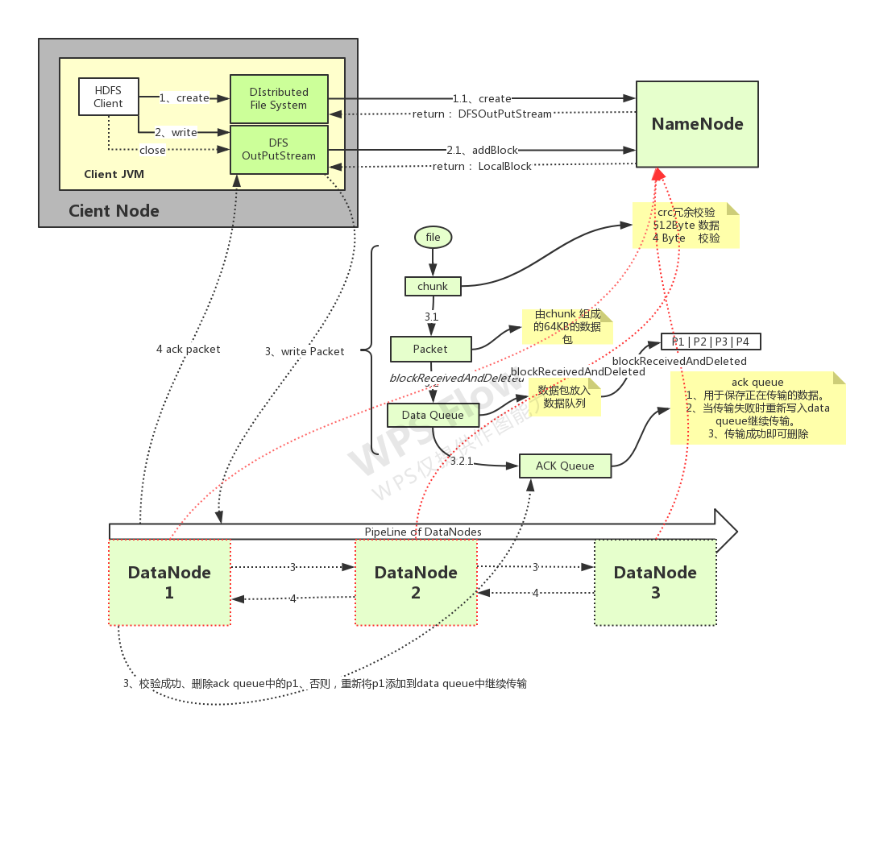
1.1 详细流程
创建文件：
- HDFS客户端向HDFS写数据，先调用DistributedFileSystem.create()方法，在HDFS创建新的空文件
- RPC（ClientProtocol.create()）远程过程调用NameNode（NameNodeRpcServer）的create()，首先在HDFS目录树指定路径添加新文件
- 然后将创建新文件的操作记录在editslog中
- NameNode.create方法执行完后，DistributedFileSystem.create()返回FSDataOutputStream，它本质是封装了一个DFSOutputStream对象
建立数据流管道：
- 客户端调用DFSOutputStream.write()写数据
- DFSOutputStream调用ClientProtocol.addBlock()，首先向NameNode申请一个空的数据块
- addBlock()返回LocatedBlock对象，对象包含当前数据块的所有datanode的位置信息
- 根据位置信息，建立数据流管道
向数据流管道pipeline中写当前块的数据：
- 客户端向流管道中写数据，先将数据写入一个检验块chunk中，大小512Byte，写满后，计算chunk的检验和checksum值（4Byte）
- 然后将chunk数据本身加上checksum，形成一个带checksum值的chunk（516Byte）
- 保存到一个更大一些的结构packet数据包中，packet为64kB大小
- packet写满后，先被写入一个dataQueue队列中
- packet被从队列中取出，向pipeline中写入，先写入datanode1，再从datanoe1传到datanode2，再从datanode2传到datanode3中
- 一个packet数据取完后，后被放入到ackQueue中等待pipeline关于该packet的ack的反馈
- 每个packet都会有ack确认包，逆pipeline（dn3 -> dn2 -> dn1）传回输出流
- 若packet的ack是SUCCESS成功的，则从ackQueue中，将packet删除；否则，将packet从ackQueue中取出，重新放入dataQueue，重新发送
- 如果当前块写完后，文件还有其它块要写，那么再调用addBlock方法（流程同上）
- 文件最后一个block块数据写完后，会再发送一个空的packet，表示当前block写完了，然后关闭pipeline
- 所有块写完，close()关闭流
- ClientProtocol.complete()通知namenode当前文件所有块写完了
6.1.2 容错
- 在写的过程中，pipeline中的datanode出现故障（如网络不通），输出流如何恢复
- 输出流中ackQueue缓存的所有packet会被重新加入dataQueue
- 输出流调用ClientProtocol.updateBlockForPipeline()，为block申请一个新的时间戳，namenode会记录新时间戳
- 确保故障datanode即使恢复，但由于其上的block时间戳与namenode记录的新的时间戳不一致，故障datanode上的block进而被删除
- 故障的datanode从pipeline中删除
- 输出流调用ClientProtocol.getAdditionalDatanode()通知namenode分配新的datanode到数据流pipeline中，并使用新的时间戳建立pipeline
- 新添加到pipeline中的datanode，目前还没有存储这个新的block，HDFS客户端通过DataTransferProtocol通知pipeline中的一个datanode复制这个block到新的datanode中
- pipeline重建后，输出流调用ClientProtocol.updatePipeline()，更新namenode中的元数据
- 故障恢复完毕，完成后续的写入流程
1.2 数据读流程
1.2.1 基本流程
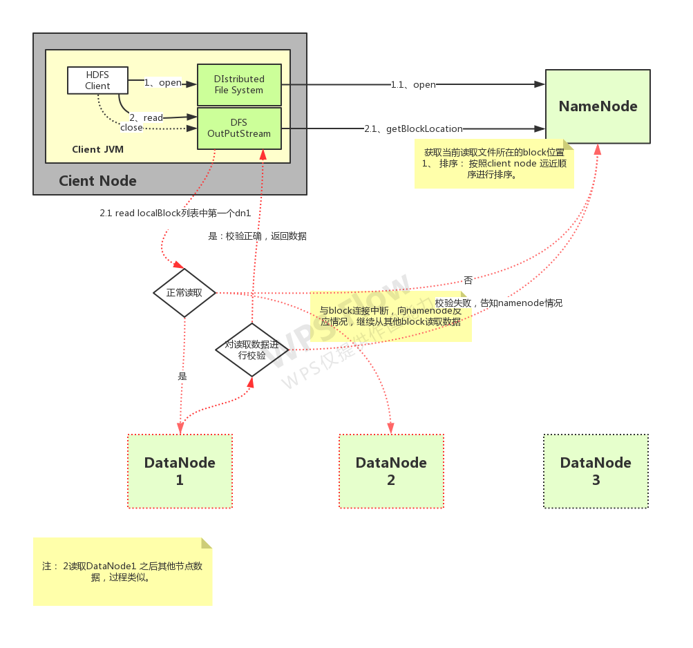
- 1、client端读取HDFS文件，client调用文件系统对象DistributedFileSystem的open方法
- 2、返回FSDataInputStream对象（对DFSInputStream的包装）
- 3、构造DFSInputStream对象时，调用namenode的getBlockLocations方法，获得file的开始若干block（如blk1, blk2, blk3, blk4）的存储datanode（以下简称dn）列表；针对每个block的dn列表，会根据网络拓扑做排序，离client近的排在前；
- 4、调用DFSInputStream的read方法，先读取blk1的数据，与client最近的datanode建立连接，读取数据
- 5、读取完后，关闭与dn建立的流
- 6、读取下一个block，如blk2的数据（重复步骤4、5、6）
- 7、这一批block读取完后，再读取下一批block的数据（重复3、4、5、6、7）
- 8、完成文件数据读取后，调用FSDataInputStream的close方法
1.2.2 容错
情况一：读取block过程中，client与datanode通信中断
- client与存储此block的第二个datandoe建立连接，读取数据
- 记录此有问题的datanode，不会再从它上读取数据
情况二：client读取block，发现block数据有问题
- client读取block数据时，同时会读取到block的校验和，若client针对读取过来的block数据，计算检验和，其值与读取过来的校验和不一样，说明block数据损坏
- client从存储此block副本的其它datanode上读取block数据（也会计算校验和）
- 同时，client会告知namenode此情况；
2. Hadoop HA高可用
2.1 HDFS高可用原理
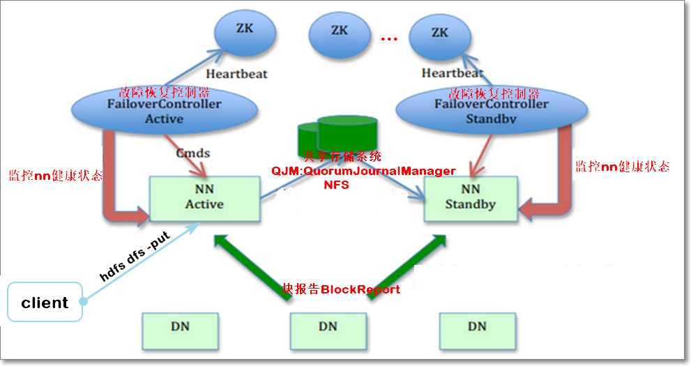
- 对于HDFS ，NN存储元数据在内存中，并负责管理文件系统的命名空间和客户端对HDFS的读写请求。但是，如果只存在一个NN，一旦发生“单点故障”，会使整个系统失效。
- 虽然有个SNN，但是它并不是NN的热备份
- 因为SNN无法提供“热备份”功能，在NN故障时，无法立即切换到SNN对外提供服务，即HDFS处于停服状态。
- HDFS2.x采用了HA（High Availability高可用）架构。
- 在HA集群中，可设置两个NN，一个处于“活跃（Active）”状态，另一个处于“待命（Standby）”状态。
- 由zookeeper确保一主一备（讲zookeeper时具体展开）
- 处于Active状态的NN负责响应所有客户端的请求，处于Standby状态的NN作为热备份节点，保证与active的NN的元数据同步
- Active节点发生故障时，zookeeper集群会发现此情况，通知Standby节点立即切换到活跃状态对外提供服务
- 确保集群一直处于可用状态
- 如何热备份元数据：
- Standby NN是Active NN的“热备份”，因此Active NN的状态信息必须实时同步到StandbyNN。
- 可借助一个共享存储系统来实现状态同步，如NFS(NetworkFile System)、QJM(Quorum Journal Manager)或者Zookeeper。
- Active NN将更新数据写入到共享存储系统，Standby NN一直监听该系统，一旦发现有新的数据写入，就立即从公共存储系统中读取这些数据并加载到Standby NN自己内存中，从而保证元数据与Active NN状态一致。
- 块报告：
- NN保存了数据块到实际存储位置的映射信息，为了实现故障时的快速切换，必须保证StandbyNN中也包含最新的块映射信息
- 因此需要给所有DN配置Active和Standby两个NN的地址，把块的位置和心跳信息同时发送到两个NN上。
3. Hadoop联邦
3.1 为什么需要联邦
- 虽然HDFS HA解决了“单点故障”问题，但HDFS在扩展性、整体性能和隔离性方面仍有问题
- 系统扩展性方面，元数据存储在NN内存中，受限于内存上限（每个文件、目录、block占用约150字节）
- 整体性能方面，吞吐量受单个NN的影响
- 隔离性方面，一个程序可能会影响其他程序的运行，如果一个程序消耗过多资源会导致其他程序无法顺利运行
- HDFS HA本质上还是单名称节点
3.2 联邦
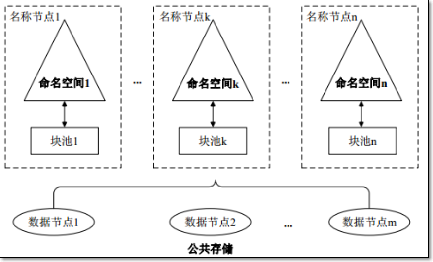
- HDFS联邦可以解决以上三个问题
- HDFS联邦中，设计了多个命名空间；每个命名空间有一个NN或一主一备两个NN，使得HDFS的命名服务能够水平扩展
- 这些NN分别进行各自命名空间namespace和块的管理，相互独立，不需要彼此协调
- 每个DN要向集群中所有的NN注册，并周期性的向所有NN发送心跳信息和块信息，报告自己的状态
- HDFS联邦每个相互独立的NN对应一个独立的命名空间
- 每一个命名空间管理属于自己的一组块，这些属于同一命名空间的块对应一个“块池”的概念。
- 每个DN会为所有块池提供块的存储，块池中的各个块实际上是存储在不同DN中的
3.3 扩展
4. 文件压缩
4.1 压缩算法
文件压缩好处：
- 减少数据所占用的磁盘空间
- 加快数据在磁盘、网络上的IO
常用压缩格式
| 压缩格式 | UNIX工具 | 算 法 | 文件扩展名 | 可分割 |
| ——– | ——– | ———- | ———- | —— |
| DEFLATE | 无 | DEFLATE | .deflate | No |
| gzip | gzip | DEFLATE | .gz | No |
| zip | zip | DEFLATE | .zip | YES |
| bzip | bzip2 | bzip2 | .bz2 | YES |
| LZO | lzop | LZO | .lzo | No |
| Snappy | 无 | Snappy | .snappy | No |Hadoop的压缩实现类；均实现CompressionCodec接口
| 压缩格式 | 对应的编码/解码器 |
| ——– | —————————————— |
| DEFLATE | org.apache.hadoop.io.compress.DefaultCodec |
| gzip | org.apache.hadoop.io.compress.GzipCodec |
| bzip2 | org.apache.hadoop.io.compress.BZip2Codec |
| LZO | com.hadoop.compression.lzo.LzopCodec |
| Snappy | org.apache.hadoop.io.compress.SnappyCodec |查看集群是否支持本地压缩（所有节点都要确认）
1
[hadoop@node01 ~]$ hadoop checknative
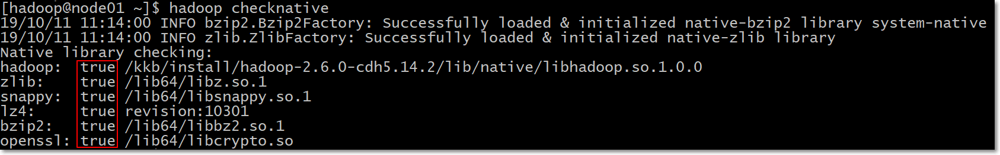
4.2 编程实践
- 编程：上传压缩过的文件到HDFS
1 |
|
- 扩展阅读
- 《Hadoop权威指南》 5.2章节 压缩
- HDFS文件压缩
5. 小文件治理
5.1 有没有问题
- NameNode存储着文件系统的元数据，每个文件、目录、块大概有150字节的元数据；
- 因此文件数量的限制也由NN内存大小决定，如果小文件过多则会造成NN的压力过大
- 且HDFS能存储的数据总量也会变小
5.2 HAR文件方案（10分钟）
- 本质启动mr程序，所以需要启动yarn
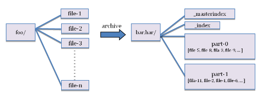
用法：
1 | archive -archiveName <NAME>.har -p <parent path> [-r <replication factor>]<src>* <dest> |
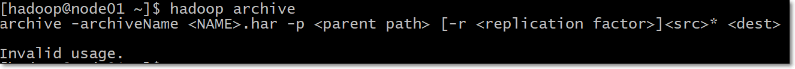
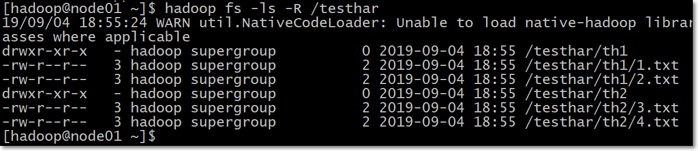
1 | 创建archive文件；/testhar有两个子目录th1、th2；两个子目录中有若干文件 |
5.3 Sequence Files方案（*）
- SequenceFile文件，主要由一条条record记录组成；每个record是键值对形式的
- SequenceFile文件可以作为小文件的存储容器；
- 每条record保存一个小文件的内容
- 小文件名作为当前record的键；
- 小文件的内容作为当前record的值；
- 如10000个100KB的小文件，可以编写程序将这些文件放到一个SequenceFile文件。
- 一个SequenceFile是可分割的，所以MapReduce可将文件切分成块，每一块独立操作。
- 具体结构（如下图）：
- 一个SequenceFile首先有一个4字节的header（文件版本号）
- 接着是若干record记录
- 记录间会随机的插入一些同步点sync marker，用于方便定位到记录边界
- 不像HAR，SequenceFile支持压缩。记录的结构取决于是否启动压缩
- 支持两类压缩：
- 不压缩NONE，如下图
- 压缩RECORD，如下图
- 压缩BLOCK，①一次性压缩多条记录；②每一个新块Block开始处都需要插入同步点；如下图
- 在大多数情况下，以block（注意：指的是SequenceFile中的block）为单位进行压缩是最好的选择
- 因为一个block包含多条记录，利用record间的相似性进行压缩，压缩效率更高
- 把已有的数据转存为SequenceFile比较慢。比起先写小文件，再将小文件写入SequenceFile，一个更好的选择是直接将数据写入一个SequenceFile文件，省去小文件作为中间媒介.
- 支持两类压缩：

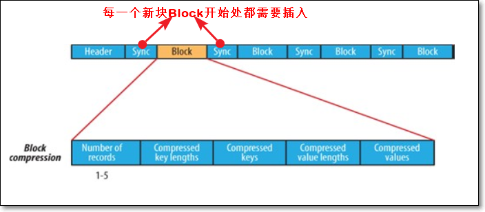
- 向SequenceFile写入数据
1 | package com.kaikeba.hadoop.sequencefile; |
- 命令查看SequenceFile内容
1 | hadoop fs -text /writeSequenceFile |
- 读取SequenceFile文件
1 | package com.kaikeba.hadoop.sequencefile; |
6. 文件快照
6.1 什么是快照
- 快照比较常见的应用场景是数据备份，以防一些用户错误或灾难恢复
- 快照snapshots是HDFS文件系统的，只读的、某时间点的拷贝
- 可以针对某个目录，或者整个文件系统做快照
- 创建快照时，block块并不会被拷贝。快照文件中只是记录了block列表和文件大小，不会做任何数据拷贝
6.2 快照操作
允许快照
允许一个快照目录被创建。如果这个操作成功完成，这个目录就变成snapshottable
用法：hdfs dfsadmin -allowSnapshot
1
hdfs dfsadmin -allowSnapshot /wordcount
禁用快照
用法：hdfs dfsadmin -disallowSnapshot
1
hdfs dfsadmin -disallowSnapshot /wordcount
创建快照
用法：hdfs dfs -createSnapshot
[ ] 1
2注意：先将/wordcount目录变成允许快照的
hdfs dfs -createSnapshot /wordcount wcSnapshot查看快照
1
hdfs dfs -ls /wordcount/.snapshot
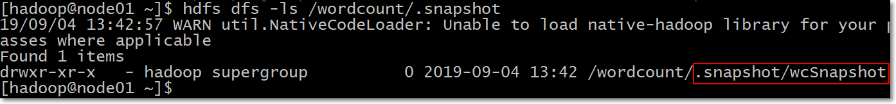
重命名快照
这个操作需要拥有snapshottabl目录所有者权限
用法：hdfs dfs -renameSnapshot
1
hdfs dfs -renameSnapshot /wordcount wcSnapshot newWCSnapshot
用快照恢复误删除数据
HFDS的/wordcount目录，文件列表如下
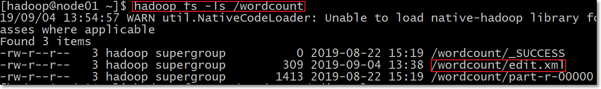
误删除/wordcount/edit.xml文件
1
hadoop fs -rm /wordcount/edit.xml
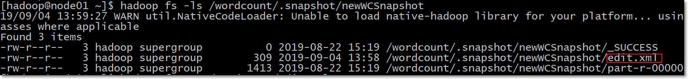
恢复数据
1
hadoop fs -cp /wordcount/.snapshot/newWCSnapshot/edit.xml /wordcount
删除快照
这个操作需要拥有snapshottabl目录所有者权限
用法：hdfs dfs -deleteSnapshot
1
hdfs dfs -deleteSnapshot /wordcount newWCSnapshot
7、拓展点、未来计划、行业趋势
HDFS存储地位
block块为什么设置的比较大
-
- 盘片platter、磁头head、磁道track、扇区sector、柱面cylinder
- 为了最小化寻址开销；从磁盘传输数据的时间明显大于定位这个块开始位置所需的时间
问：块的大小是不是设置的越大越好呢？
1、 不是，寻址的时间大概是 100ms，设计一般设置为寻址时间占用十分之一，也就是一秒。 硬盘的传输速录大概是100m/s 一秒大概为100M，最接近100的大小为128M。
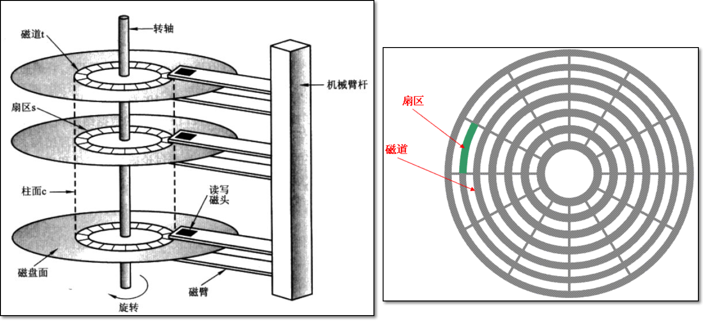